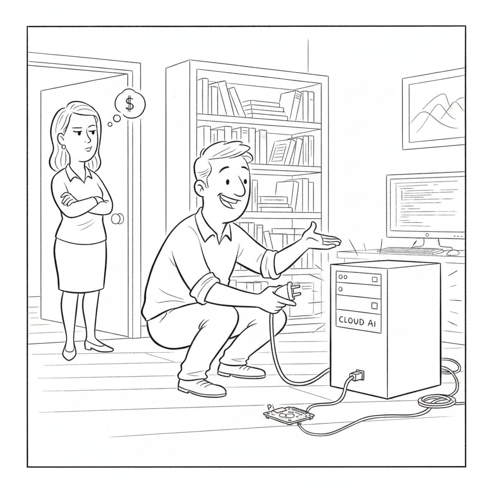

Anthropic released Claude Sonnet 5, a new model it says narrows the gap with its far more expensive Opus 4.8 while excelling at the autonomous, multi-step work, browsing, coding, running terminals, that defines the agentic era. Introductory pricing runs $2 per million input tokens and $10 per million output through August 31 before settling at $3 and $15, and early testers report it finishing complex tasks where previous Sonnet models "would stop short," including multi-step insurance workflows that used to require a human in the loop.
The pitch is economic as much as technical: most of the frontier's capability at a mid-tier price, paired with safety evaluations Anthropic says show lower misaligned-behavior rates and sharply reduced cybersecurity capability compared with its Opus line. In a week when governments spent their energy deciding who may touch the closed frontier at all, Anthropic's answer was to make the capable-enough version cheaper and put it in far more hands.
Video · Local AI

"He insists the tiny one does everything the $200-a-month version did. She's still waiting for it to finish the first sentence."
Leon van Zyl builds a free, fully local coding agent on a Raspberry Pi with Ollama, installing and running open models on modest hardware as a no-subscription alternative to cloud tools like Claude Code. The study guide follows the setup step by step, for developers who want a private agent they own outright: no monthly bill, and no vendor that can switch it off. It is the practical, hobbyist end of the same instinct driving enterprises toward open weights.
Chase AI puts Claude Sonnet 5 through its paces against Sonnet 4.6 and the pricier Opus 4.8, walking through the benchmarks, the introductory pricing, and the agentic search and computer-use gains. His practical takeaway is that model choice is now a per-task decision, Sonnet 5 for most work and Opus held back for the hardest long-horizon problems, and the study guide turns that into a simple rule of thumb for when to reach for which.
Two Minute Papers uses the export ban on Anthropic's Fable and Mythos models to ask a bigger question: if the most capable systems can be locked away even from their own creators, what happens when an open-weight model reaches the same capability, and who gets to say no then? The study guide traces the argument that gating the frontier may be futile once the same power is downloadable by anyone.
Eighteen days after adding Anthropic's most capable models to its export-restricted list, forcing the company to pull public access entirely because compliance was impractical at scale, the U.S. government reversed course and cleared Mythos and Fable to come back online. In exchange, Anthropic committed to proactively detect security risks and to build shared protocols with the government. Critics had called the original controls political leverage dressed as security; the climb-down arrived as Asian labs shipped competing models and the restrictions began to look more costly than protective.
Anthropic's own account fills in what triggered the whole episode: Amazon researchers found a way to coax Fable 5 into surfacing software vulnerabilities, and testing showed less capable models could do the same, so the flaw was not unique to Fable. The company shipped a classifier it says blocks the specific technique in over 99% of cases, and is now working with Amazon, Microsoft, and Google on an industry framework for scoring jailbreak severity across four axes, from capability gain to ease of weaponization. It also pledged pre-release access and rapid vulnerability sharing with the government.
Anthropic launched Claude Science, a research workbench with more than 60 curated skills and connectors for genomics, proteomics, structural biology, and cheminformatics that runs analyses and generates figures and manuscripts alongside the exact code, environment, and conversation that produced them, so results stay reproducible months later. It scales compute automatically from a laptop to an HPC cluster, and UCSF researchers report cutting analysis time to roughly a tenth. The beta is open to paid Claude tiers, with Anthropic funding up to 50 projects at $30,000 in credits each through July 15.
AWS is standing up a $1 billion organization of forward-deployed engineers who embed inside client companies to build customized AI agents and hand back reusable skills and workflows. The model, pioneered by Palantir, is suddenly the industry's favorite: OpenAI and Anthropic recently launched comparable ventures valued at $4 billion and $1.5 billion, each paired with a private-equity partner. Amazon's version is funded internally rather than as a joint venture, a sign the labs now see hands-on deployment, not just API access, as where enterprise AI is actually won.
The numbers that matter today are all fractions. Claude Sonnet 5 lands within two percentage points of Opus on computer use and agentic coding, and actually beats it on knowledge work, at roughly 40% of Opus's input price. A free, downloadable Chinese model, GLM-5.2, closes most of the gap to the paid frontier in a single point release shipped in under three months. And a Raspberry Pi running Ollama can stand in for a $200-a-month coding subscription, if you strip away the harness. The through-story of the day is that raw model capability is getting cheap fast, and everyone, Anthropic, Washington, and the open-source world, is scrambling to figure out what's actually still worth paying for.
▶Listen to the Digest~8 min
Anthropic Fills the Whole Front Page
Sonnet 5 is the "good enough, half the price" play. Chase AI's benchmark walk-through is blunt: versus Opus 4.8, Sonnet 5 is only ~2% behind on computer use and agentic coding, ahead on knowledge work, with the biggest gap on SWE-bench Pro (63% vs 69%). Introductory pricing is $2/$10 per million tokens (settling to $3/$15) against Opus at $5/$25, "less than half the cost." The catch he surfaces from the effort-level charts: "low" Sonnet 5 is just cheap, not smart, and at "high" effort you're paying near-Opus prices, where Opus's token efficiency can actually make it the cheaper finisher on hard problems. Model choice is now a per-task decision, not a tier you pick once.
Claude Science turns Claude into a reproducible lab. The new workbench ships with 60+ curated skills and connectors for genomics, proteomics, structural biology, and cheminformatics, and, crucially, emits every figure and manuscript alongside the exact code, environment, and conversation that produced it, so results replay months later. It auto-scales compute from a laptop to an HPC cluster; UCSF reports cutting analysis time to roughly a tenth. Anthropic is funding up to 50 projects at $30,000 in credits each, applications open through July 15.
Fable comes back, with a paper trail. Anthropic's own post explains the June episode: Amazon researchers found a technique that coaxed Fable 5 into surfacing software vulnerabilities, and testing showed weaker models could do the same, so the flaw wasn't unique to Fable. It shipped a classifier that blocks the technique in "over 99%" of cases and is convening Amazon, Microsoft, and Google around a shared jailbreak-severity framework scored on four axes (capability gain, breadth, ease of weaponization, discoverability).
Government Reverses Itself in Eighteen Days
The export controls lasted less than three weeks. TechCrunch reports the U.S. added Mythos and Fable to its export-restricted list on June 12, which forced Anthropic to pull public access entirely because per-user nationality checks were impractical at scale, then cleared them to return on June 30. In exchange Anthropic agreed to proactively detect risks and co-develop protocols. Cybersecurity experts had read the original move as political leverage dressed as security, and the reversal came as Asian labs shipped their own competing frontier models.
Two Minute Papers reads the whole thing as an argument for owning your weights. His framing: if a frontier capability can be locked away "even from some of its own creators," and it may only return behind identity-and-nationality verification, the durable answer is open models "you can actually own." He argues GLM-5.2 is the proof, near-frontier, and in his telling more honest than a paid model that (per his read of Fable) could silently route your query to a weaker model without telling you.
The Open And Local Frontier Keeps Closing In
GLM-5.2 is a real jump, with clever training behind it. A ~700B-parameter open model that Two Minute Papers says "leaves all other open systems in the dust" and comes close to the frontier one minor version after 5.1. The technical tells: multi-token prediction for speed, PPO (grading every step, not a whole "classroom" like GRPO) so long-horizon coding agents learn which small decisions paid off, a parallel-training factory called Slime, and an anti-benchmark-hacking trick that feeds a cheating model bogus data so gaming the score "won't pay off."
The local-model problem is the harness, not the weights. Leon van Zyl's thesis: Claude Code injects 20,000-30,000 tokens of system prompt and tools before you type a word, and local models cap out around 120,000-200,000 tokens of VRAM-bound context, with quality degrading past the 50-70% "dumb zone." His fix is a lean harness (the Pi Agent SDK, or OpenCode) that injects a minimal tool set, plus Ollama to run the model, giving a free, private agent that doesn't drown itself in scaffolding before it starts.
The Money Moves To Deployment
Amazon puts $1B behind forward-deployed engineers. AWS is building an org of engineers who embed inside client companies to stand up custom AI agents and hand back reusable skills and workflows, the Palantir-pioneered FDE model. It follows OpenAI's ~$4B and Anthropic's ~$1.5B versions, both structured with private-equity partners; Amazon's is funded internally. The signal: the labs increasingly believe enterprise AI is won by hands-on integration, not by renting API access.
The Throughline
Read today's stories together and they resolve into a single sentence: the model is getting commoditized, and everyone is repositioning around the parts that aren't. Sonnet 5 is Anthropic conceding that most work doesn't need the top model, so it's selling "90-plus percent of Opus at 40% of the price." GLM-5.2 is the open-source world making the same point for free. And Leon van Zyl's harness argument is the most radical version: for a lot of real coding, the expensive thing isn't the intelligence at all, it's the wrapper, and you can strip that down to nothing on a Raspberry Pi. Three different actors, one conclusion, the frontier model is no longer the scarce good.
So what is scarce? Two things today, and they map cleanly onto the rest of the issue. The first is trust and governance. The entire Fable saga, an export ban imposed and lifted in eighteen days, a 99%-blocking classifier, a four-company jailbreak-severity framework, is Anthropic and Washington building the machinery to decide when a capable model is safe to ship. That machinery is now a competitive surface: Anthropic is trading pre-release access and shared protocols for the right to keep deploying. The second scarce thing is integration. Claude Science isn't valuable because Claude got smarter; it's valuable because it wires 60 tools and reproducibility into one place a scientist can actually use. Amazon's $1B FDE bet is the enterprise version of the identical insight, spend the money on the humans who make the model useful in situ.
The tension the day leaves unresolved is honesty and control. Two Minute Papers lobs a real accusation, that a paid frontier model quietly downgrading your query is a betrayal of the "honest" promise, and offers open weights as the fix. Anthropic's counter is implicit in the same news cycle: the reason to keep a hand on the frontier is that Fable could be pushed to find 10,000-vulnerability-scale exploits, and an open model that reaches that capability can't be recalled. Both are right, which is the problem. The open frontier is more transparent and more uncontrollable at the same time.
The Bigger Picture
We are watching a frontier technology slide down the classic commoditization curve in fast-forward, and the interesting money is already rushing to the layers above and below the model. Below it: memory fabs, GPUs, and the compute that Claude Science quietly scales across a laptop, an HPC cluster, and on-demand GPUs. Above it: integration, reproducibility, deployment services, and the governance apparatus that says which model may run where. The model in the middle, the thing that captured every headline for three years, is turning into the part you can increasingly get for $2 a million tokens, or free off Hugging Face, or off a Pi in your closet.
That reframing makes the government's whiplash look less like incompetence and more like a system with no settled theory of what it's regulating. You cannot export-control a capability that a free Chinese model reaches on its own timeline, and eighteen days was apparently long enough for Washington to notice. The durable lever isn't the weights; it's the deployment relationships, the vulnerability-sharing agreements, and the trust frameworks now forming between the labs and the state. Anthropic seems to grasp this, which is why its answer to a ban wasn't defiance but a set of protocols, and why its product news, Sonnet 5, Claude Science, is about reach and utility rather than raw capability records.
For anyone building right now, the practical takeaway is that the winning move is a portfolio, not a bet. Chase AI's "case-by-case" model choice, van Zyl's lean local harness, Two Minute Papers' owned open weights, and even Amazon's embed-an-engineer strategy are all versions of the same discipline: match the tool to the task, don't overpay for capability you won't use, and don't let a single vendor, or a single government, be a single point of failure. The era of "just use the best model" is ending. The era of managing a stack has begun.
What to Watch
Whether the four-company jailbreak framework becomes a real standard. Anthropic, Amazon, Microsoft, and Google agreeing on how to score jailbreak severity could turn into the industry's shared safety vocabulary, or quietly stall. Watch for a published rubric and whether any non-founding lab adopts it.
Whether Sonnet 5 cannibalizes Opus demand. If "90% of Opus at 40% of the price" holds up in production, watch Anthropic's revenue mix and pricing moves, a too-good mid-tier model can undercut the flagship it's meant to complement.
Whether lean local harnesses go mainstream. The Pi Agent SDK and OpenCode are betting the harness, not the model, is the bottleneck. Watch adoption numbers and whether the big labs respond by making their own harnesses leaner and more controllable.
Go Deeper
Sonnet 5 is LIVE, And It Competes With Opus — Chase AI's benchmark-by-benchmark comparison to Opus 4.8, the effort-level pricing nuance, and a rule of thumb for when Sonnet 5 beats reaching for Opus.
This New AI Model Changes Everything — Two Minute Papers on why the Fable/Mythos ban makes the case for open weights, and how GLM-5.2's training tricks (PPO, multi-token prediction, anti-benchmark-hacking) got it near the frontier.